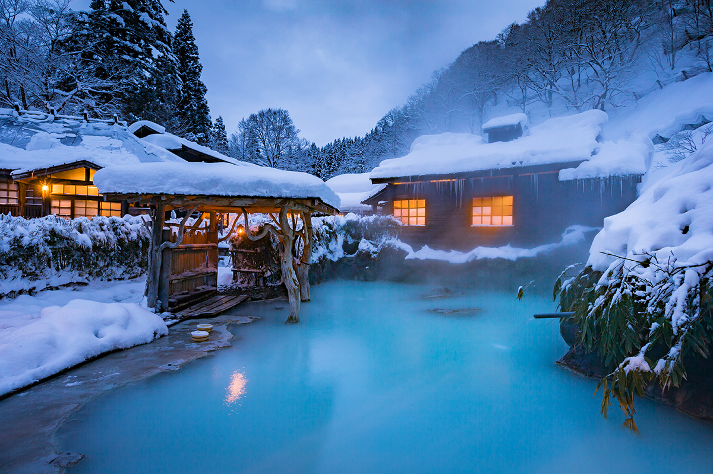
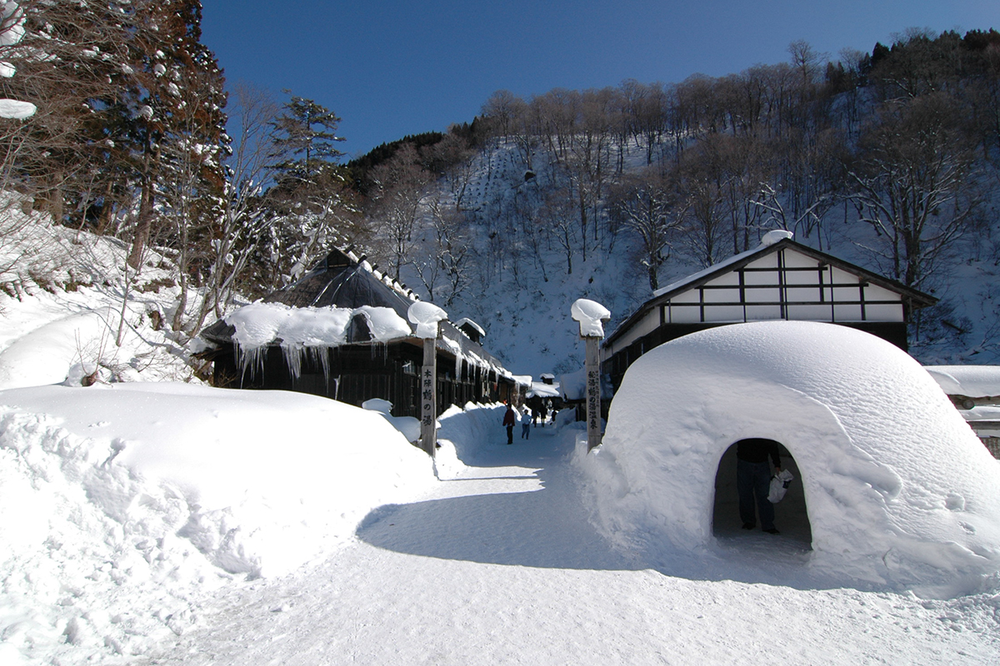
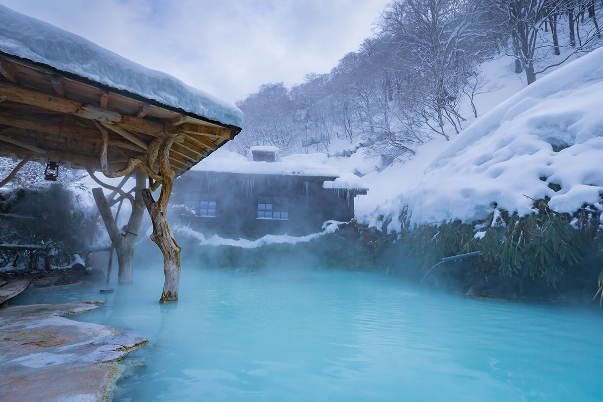
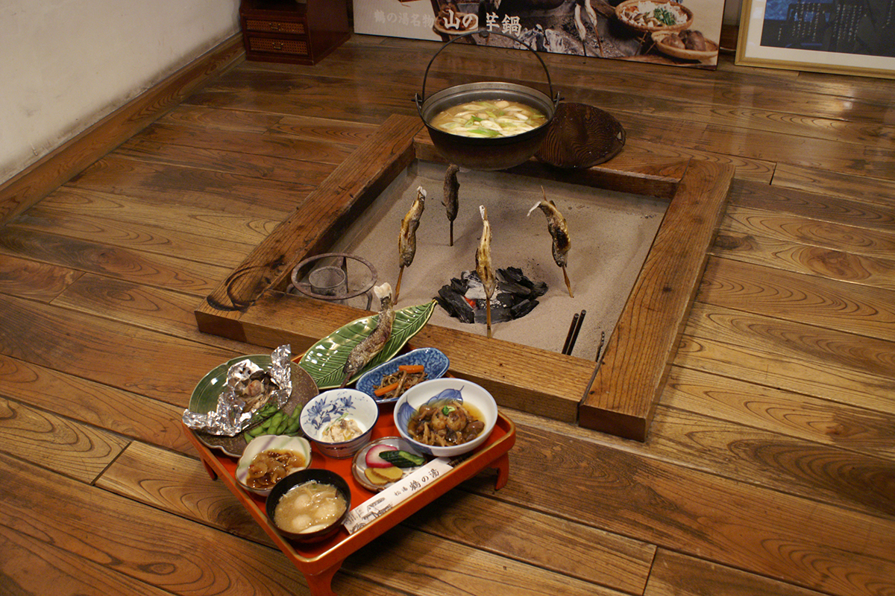
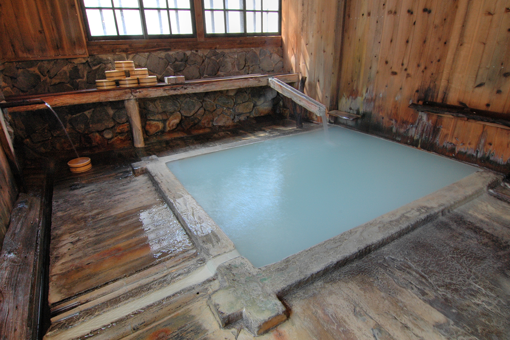

Префектура Акита · Сэмбоку · онсэн
Онсэны Нюто: семь горячих источников в буковом лесу и старейший из них, Tsurunoyu

В горах префектуры Акита над буковым лесом поднимается пар семи горячих источников. Онсэны Нюто давно называют последним потаённым онсэном Японии, а старейший из них, Tsurunoyu, принимает гостей с эпохи Эдо.
Место
Последний потаённый онсэн Японии
Есть онсэны, которые помогают коже оставаться гладкой и молодой, а есть те, что действуют изнутри, на желудок и иммунитет. Исследователь японских онсэнов, который изучает их больше сорока лет, составил список любимых источников страны, от знаменитых курортов до глухих горных уголков. Список открывают онсэны Нюто в префектуре Акита, где зимой можно сидеть в горячей воде под открытым небом и смотреть на снег.
Онсэны Нюто лежат в глубине нагорья у озера Тадзава, у подножия горы Нюто. Здесь извивается горная река Сэндацу, вокруг стоит девственный буковый лес, и пар поднимается то тут, то там прямо среди деревьев. В долине семь источников: Tsurunoyu, «Огама», «Нюто», «Таэ-но ю», «Ганиба», «Магороку» и «Куро-ю». Их уже много лет называют последним потаённым онсэном Японии.
Дух старинного места для лечебных купаний, тодзи, лучше всех сохранил «Магороку». Там всё подчинено воде, скромность возведена в принцип, и такой взгляд на онсэн вызывает у исследователя глубокое уважение. В начале 2024 года «Магороку» был закрыт: осенью того же года его собирался вновь открыть новый владелец.

Рёкан
Tsurunoyu: тодзи с эпохи Эдо
Для гостей любого возраста, и для женщин тоже, исследователь советует Tsurunoyu. Это самый старый онсэн в Нюто: в эпоху Эдо сюда приезжали лечиться на водах правители княжества Акита. И как обычный рёкан Tsurunoyu уже сорок лет у него на высоком счету.

Мало кто знает, что Tsurunoyu, мечта любителей онсэнов, принимает и одиночных гостей, которые приезжают на тодзи. Хозяин рёкана любит повторять: «Тодзи это начало онсэна». Рёкан стал одним из самых популярных потаённых онсэнов в мире, но от этого правила хозяин не отступает. Напротив «Хондзина», длинного дома под соломенной крышей с очагами ирори эпохи Эдо, стоят корпуса № 2 и № 3, где можно жить с завтраком и ужином.

Вода
Четыре источника и молочная купальня
Пейзаж Tsurunoyu, постройки и купальни, похож на сказочную горную деревню, но главное здесь всё же вода. Основа у неё сероводородная, а источников четыре, и у каждого своё прозвище. «Сиро-ю», белая вода, зовут источником красоты. «Куро-ю», чёрная вода, источник для тех, кто мечтает о ребёнке. «Нака-но ю», средняя вода, помогает глазам. «Таки-но ю» это купальня с падающей струёй. Даже если жить здесь несколько ночей подряд, купаться не надоест.

Самая знаменитая купальня Tsurunoyu: большая общая купальня под открытым небом для мужчин и женщин, где молочно-белая вода сама поднимается со дна. Кроме неё у рёкана есть ещё две купальни под открытым небом только для женщин.
Вода серная, хлоридно-гидрокарбонатная, с натрием и кальцием, на выходе из земли около 59,6 °C, и подают её без рециркуляции. В 2024 году ночь с завтраком и ужином стоила от 10 600 иен с налогом и сервисным сбором, зимой к ней прибавлялось 1320 иен за отопление номера, а купание без ночёвки стоило 700 иен.
Tsurunoyu
- Адрес
- префектура Акита, Сэмбоку, Тадзавако-Тадзава, Сэндацу-сава, государственный лес, 50
- Телефон
- +81 187-46-2139
- Цены / Вход
- ночь с завтраком и ужином от 10 600 иен (с налогом и сервисным сбором; зимой плата за отопление 1320 иен за номер), купание без ночёвки 700 иен
- Заезд / выезд
- заезд с 15:00, выезд до 10:00
- Сайт
- tsurunoyu.com